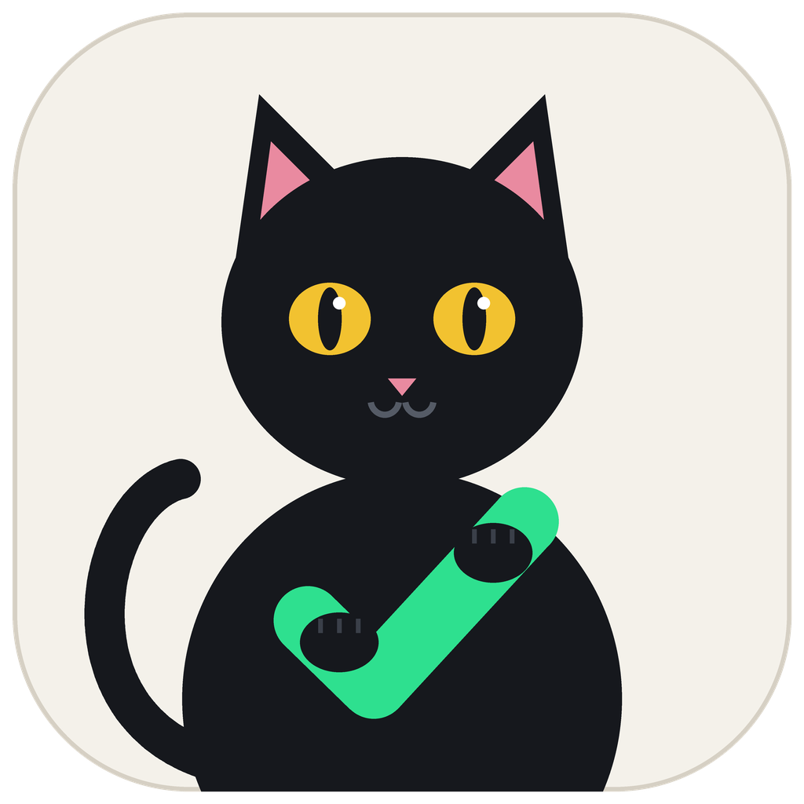
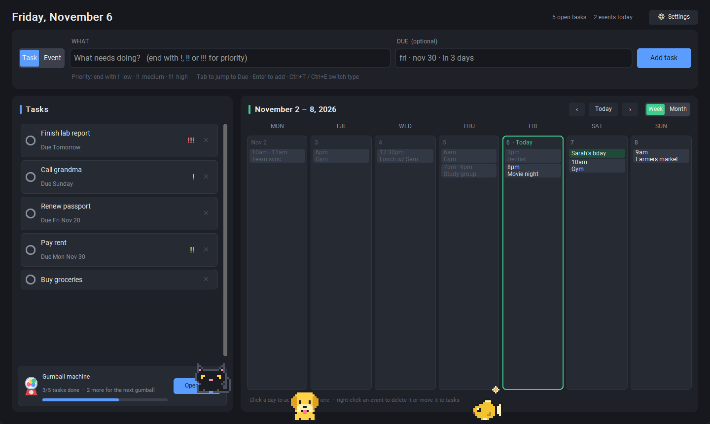
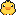
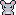
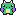
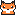
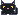
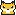

Tasks and events,
typed the way you think.
OnTrack is a free desktop app for Windows. Type “Dentist fri 3pm” or “Pay rent nov 30 !!” and it lands on your calendar or your to-do list. Optionally, keep your events in sync with Google Calendar.
Download for Windows

What it does
Plain-English input
Type what and when: “Team sync 3-4pm”, “Lunch w/ Sam tomorrow 12:30pm”. A live preview shows exactly what will be added.
Tasks that stick around
To-dos stay until you check them off, with due dates, overdue flags and priority marks (! !! !!!).
Week and month calendar
See your events at a glance. Click a day to add an event there, or turn an event into a task.
Google Calendar sync
Optional two-way sync with your primary Google Calendar: add an event in either place and it shows up in both.
Your data stays on your PC
Everything is saved in a file on your computer. There's no OnTrack account and no OnTrack server.
Gumball buddies
Every 5 finished tasks earns a gumball with a collectible pixel pet inside. Buddies hop around your window while you work, and each one has its own sound.
Event reminders
A chime and a pop-up in the corner of your screen before an event starts, even while OnTrack is minimised. Choose 5, 10, 15 or 30 minutes ahead.
Themes
Dark, Warm or Light, plus import and export of standard .ics calendar files.
Finish tasks, earn gumballs
Every 5 tasks you check off earns a gumball. Grab the crank, give it a turn, and out pops a pixel buddy that hops along the bottom of your OnTrack window. Click a buddy and it does its own trick with its own sound: the duck quacks, the dragon breathes fire, the goldfish blows bubbles and the black cat purrs. Your first gumball is free.


Collect all 10
- FrogBasic

DuckBasic
MouseBasic- GoldfishBasic

Tiny DragonRare- GhostRare

FoxRare- AxolotlEpic
- Golden RetrieverEpic

Black CatLegendary
Basic 60% · Rare 28% · Epic 10% · Legendary 2%
Stars and trading up

★★★Every sprite comes out at 1★. Two of the same star level merge into the next, and each star unlocks new colours. Once you have a 3★, any more count as extras: collect 5 extras in one rarity and trade them for a random sprite of the next rarity. Choose up to three buddies to show on screen (or none) in Settings.
How Google Calendar sync works
Sync is off until you turn it on. In OnTrack, open Settings → Connect Google Calendar and sign in with Google. OnTrack asks for permission to view and edit events on your calendars, and uses it only to:
- show the events on your primary Google Calendar (from 30 days ago to a year ahead) in OnTrack's calendar, and
- add, change or delete events in your Google Calendar when you add, change or delete them in OnTrack.
Your calendar data goes directly between your computer and Google. It is never sent to the developer or anyone else. Tasks are never synced. You can disconnect at any time from Settings. See the privacy policy for details.
Installing
Download OnTrack.exe and double-click it. No installer is needed. Windows may show a “Windows protected your PC” message because the app is new; click More info → Run anyway.